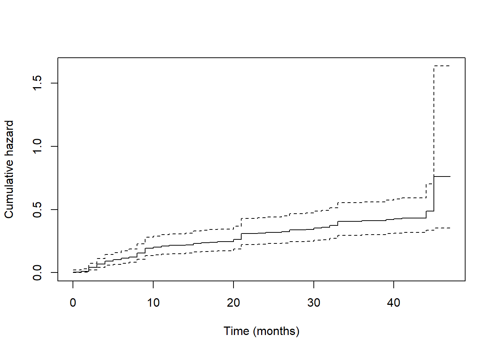
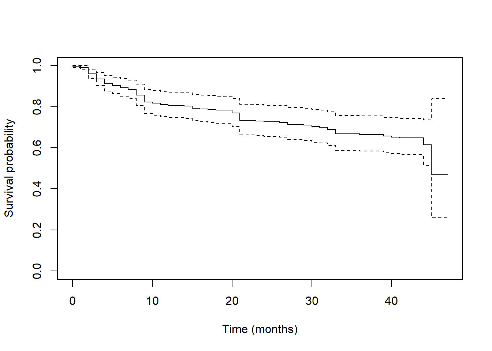
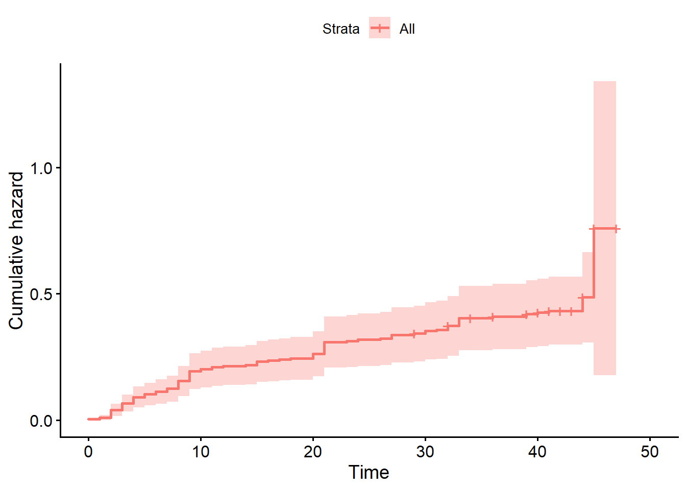
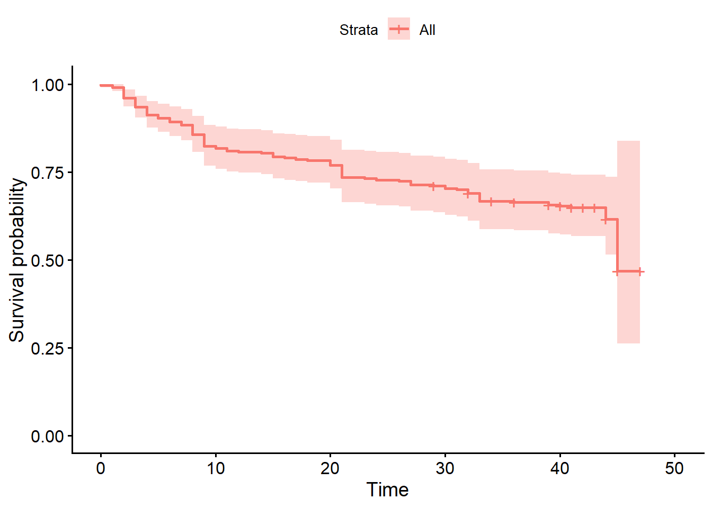

library(tidyverse)
library(haven)
library(survival)
data <- read_dta("data/hschool.dta")
data <- data |>
mutate(female = sex)Event history analysis
In this part you will learn about the following basic tasks:
Recognize event history (survival) data: an outcome consisting of a duration until an event occurs, possibly right-censored for subjects who have not (yet) experienced the event.
Explain why an ordinary linear regression of duration on predictors is generally not an appropriate way to analyze event history data.
Set up event history data in R and fit a Cox proportional hazards model.
Interpret Cox model coefficients in two ways: as effects on the log hazard, and as hazard ratios.
Plot and interpret the hazard function, the cumulative hazard function, and the survival function.
Test the proportional hazards assumption.
Construct a person-period file and fit a discrete-time event history model using logistic regression, as an alternative to the Cox model.
Event history (survival) data
Event history data record, for each subject, the time until a specific event occurs (for instance, dropping out of school, finding a job, or experiencing a relapse). A defining feature of such data is censoring: for some subjects the event has not (yet) occurred by the end of the observation period, so we only know that their duration is at least as long as the observed time, not the exact duration. Simply treating censored durations as if they were completed durations, or dropping censored cases from the analysis, both lead to biased results.
Because of censoring, and because durations are often skewed and their effects on the timing of an event need not be additive on the original time scale, an ordinary linear regression of duration on predictors — even restricted to subjects who did experience the event — is generally not an appropriate way to analyze this kind of data. The normality and constant-variance assumptions of linear regression are typically violated, and (if applied to the full sample without special handling) censored cases are handled incorrectly.
The Cox proportional hazards model
The hazard rate is the instantaneous “risk” of the event occurring at a given time, given that it has not yet occurred. The Cox proportional hazards model relates the hazard rate to a set of predictors without requiring a specific parametric shape for how the hazard changes over time:
\[ h(t \mid X) = h_0(t) \exp(b_1 X_1 + \dots + b_k X_k) \]
Here \(h_0(t)\) is the (unspecified) baseline hazard, and the predictors act multiplicatively on this baseline hazard. This is the “proportional hazards” assumption: the ratio of hazards between two subjects with different predictor values is constant over time, even though the hazard itself may go up or down over time for everyone.
Cox model coefficients can be interpreted in two ways, directly analogous to logistic regression:
Log hazard. A one-unit increase in \(X_j\) is associated with a \(b_j\) change in the log hazard of the event occurring, holding other predictors constant. A positive coefficient means the event tends to happen sooner (a higher hazard); a negative coefficient means it tends to happen later.
Hazard ratios. Exponentiating the coefficient, \(\exp(b_j)\), gives the multiplicative change in the hazard for a one-unit increase in \(X_j\). A hazard ratio above 1 means a higher hazard (event tends to happen sooner); below 1 means a lower hazard (event tends to happen later).
Note that statistical significance from a Cox model need not agree with significance from an ordinary linear regression on the same (uncensored) durations — this is not a contradiction, but a reminder that the linear model’s assumptions are often violated for duration data.
Hazard, cumulative hazard, and survival functions
Three related functions describe the same underlying process from different angles:
- The hazard function shows how the instantaneous risk of the event changes over time.
- The cumulative hazard function accumulates the hazard over time.
- The survival function shows the probability of not yet having experienced the event, as a function of time; it starts at 1 and decreases (weakly) over time.
Plotting these functions, typically separately for meaningful subgroups (e.g., predicted at representative values of the predictors), gives insight into the shape of the process that a table of hazard ratios alone does not.
Testing the proportional hazards assumption
The proportional hazards assumption can be tested formally, typically based on the (scaled) Schoenfeld residuals. A significant test result suggests that a predictor’s effect on the hazard is not actually constant over time, and the standard Cox model coefficients for that predictor should be interpreted with caution; extensions that allow time-varying effects exist but are beyond the scope of this course.
Discrete-time event history analysis
An alternative to the (continuous-time) Cox model is to restructure the data into a person-period file: one row per subject per time unit (e.g., per month) that the subject was at risk of the event, with an indicator for whether the event occurred in that period. A logistic regression of the event indicator on the predictors (and, optionally, functions of time itself) then estimates a discrete-time hazard model. This approach is conceptually simple and uses only tools you already know (logistic regression), at the cost of requiring the data to be reshaped into a much longer format.
R
You will learn the R functions listed below to set up and analyze event history data.
| Function | Description |
|---|---|
survival::Surv() |
Create a survival object (time and event-status pair) |
survival::coxph() |
Fit a Cox proportional hazards model |
summary() |
Display coefficients (log hazard) and hazard ratios for a Cox model |
survival::survfit() |
Estimate the survival function (e.g., baseline or at chosen predictor values) |
survminer::ggsurvplot() |
Plot the survival function |
survival::cox.zph() |
Test the proportional hazards assumption using scaled Schoenfeld residuals |
survival::survSplit() |
Convert a survival dataset into a person-period (long) file |
Examples:
Load the data and construct a helper variable:
Count subjects who married before, or during, college:
data |>
filter(mrg < stm) |>
nrow()
data |>
filter(mrg >= stm, mrg <= stm + time) |>
nrow()Fit an (inappropriate, for comparison purposes) linear regression on duration, restricted to subjects who experienced the event:
fit_lm <- lm(time ~ sex + grades, data = data |> filter(died == 1))
summary(fit_lm)Set up the survival object and fit a Cox proportional hazards model:
fit_cox <- coxph(Surv(time, died) ~ sex + grades, data = data)
summary(fit_cox)The summary() output of a coxph object reports both the coefficients (coef, on the log hazard scale) and the exponentiated coefficients (exp(coef), the hazard ratios) side by side.
Plot the hazard, cumulative hazard, and survival functions:
library(survminer)
fit_surv <- survfit(fit_cox)
ggsurvplot(fit_surv, fun = "event", data = data) # cumulative incidence (1 - survival)
ggsurvplot(fit_surv, fun = "cumhaz", data = data) # cumulative hazard
ggsurvplot(fit_surv, data = data) # survival functionBase-R plotting is also available directly from survfit():
plot(fit_surv, fun = "cumhaz", xlab = "Time (months)", ylab = "Cumulative hazard")
plot(fit_surv, xlab = "Time (months)", ylab = "Survival probability")Test the proportional hazards assumption:
cox.zph(fit_cox)Construct a person-period file and fit a discrete-time logistic model:
person_period <- data |>
dplyr::select(caseid, time, sex, grades, died) |>
rowwise() |>
mutate(period = list(seq_len(time))) |>
unnest(period) |>
mutate(event = as.integer(died == 1 & period == time)) |>
dplyr::select(-time, -died)
fit_discrete <- glm(event ~ sex + grades, data = person_period, family = binomial)
summary(fit_discrete)Assignments
Use the dataset hschool. The variables are: caseid (case identifier), time (time in months until school drop-out, or censoring), died (event indicator: 1 = dropped out, 0 = censored), sex (0 = male, 1 = female), grades (1 = high grades, 5 = low grades), parttime (1 = part-time student), mrg (month of marriage, coded as \(12 \times (\text{year} - 1980) + \text{month}\); 99 = never married), and stm (month of college entry, coded the same way).
Data description
How many students were married before entering college (i.e.,
mrgoccurred beforestm)?How many students got married during college (i.e.,
mrgfell betweenstmandstm + time)?
Linear regression on duration
- We are interested in the effect of
sexandgradeson the time until school drop-out. Fit a linear regression oftimeonsexandgrades, making sure you correctly restrict the sample to only those subjects for whom drop-out actually occurred. Interpret all coefficients, including the intercept — and note anything odd or hard to interpret about the intercept.
Cox proportional hazards model
Fit a Cox proportional hazards model of drop-out on
sexandgrades. Interpret each coefficient (a) as an effect on the log hazard, and (b) as a hazard ratio.Compare the statistical significance of
sexandgradesin the Cox model to their significance in the linear regression from question 3. Are the conclusions the same? If not, why is this not a contradiction?
Plotting the process
- Plot the hazard function, the cumulative hazard function, and the survival function implied by the Cox model.
Testing the proportional hazards assumption
- Test the proportional hazards assumption for the Cox model of question 4. Does the assumption hold?
BONUS: discrete-time analysis
- Construct a person-period file from
hschool: one row per subject per month at risk, with an event indicator equal to 1 only in the month drop-out actually occurred (0 in all other months, including for censored subjects). Fit a discrete-time event history model using logistic regression of the event indicator onsexandgrades. What do you conclude, and how does this compare to the conclusions from the Cox model?
Answers
Make sure this file is in the same R Project as the data folder. Use relative file paths, not full paths to your computer.
library(tidyverse)── Attaching core tidyverse packages ──────────────────────── tidyverse 2.0.0 ──
✔ dplyr 1.2.1 ✔ readr 2.2.0
✔ forcats 1.0.1 ✔ stringr 1.6.0
✔ ggplot2 4.0.3 ✔ tibble 3.3.1
✔ lubridate 1.9.5 ✔ tidyr 1.3.2
✔ purrr 1.2.2
── Conflicts ────────────────────────────────────────── tidyverse_conflicts() ──
✖ dplyr::filter() masks stats::filter()
✖ dplyr::lag() masks stats::lag()
ℹ Use the conflicted package (<http://conflicted.r-lib.org/>) to force all conflicts to become errorslibrary(haven)
library(survival)
library(survminer)Warning: package 'survminer' was built under R version 4.6.1Loading required package: ggpubrWarning: package 'ggpubr' was built under R version 4.6.1
Attaching package: 'survminer'
The following object is masked from 'package:survival':
myelomahschool <- read_dta("data/hschool.dta")
hschool <- hschool |>
mutate(female = sex)Data description
1. Married before entering college
hschool |>
filter(mrg < stm) |>
nrow()[1] 42. Married during college
hschool |>
filter(mrg >= stm, mrg <= stm + time) |>
nrow()[1] 10Linear regression on duration
3. A linear regression on completed durations
fit_lm <- lm(time ~ sex + grades, data = hschool |> filter(died == 1))
summary(fit_lm)
Call:
lm(formula = time ~ sex + grades, data = filter(hschool, died ==
1))
Residuals:
Min 1Q Median 3Q Max
-15.078 -9.379 -4.579 7.134 29.472
Coefficients:
Estimate Std. Error t value Pr(>|t|)
(Intercept) 18.55328 3.13639 5.915 4.27e-08 ***
sex -0.07509 2.39191 -0.031 0.975
grades -1.47489 0.96507 -1.528 0.129
---
Signif. codes: 0 '***' 0.001 '**' 0.01 '*' 0.05 '.' 0.1 ' ' 1
Residual standard error: 12.03 on 104 degrees of freedom
Multiple R-squared: 0.02206, Adjusted R-squared: 0.003258
F-statistic: 1.173 on 2 and 104 DF, p-value: 0.3134# Females drop out about 0.075 months faster than males, but this is
# not significant.
# People with lower grades (higher values of grades, since 1 = high,
# 5 = low) drop out faster, but this is not significant either.
# Males (sex = 0) with the highest grades (grades = 0, which is outside
# the actual scale of 1-5 and should ideally be recentered) are
# predicted to drop out at 18.55 months. Because grades = 0 does not
# occur in the data, this intercept is not substantively meaningful as
# it stands.Cox proportional hazards model
4. The Cox model
fit_cox <- coxph(Surv(time, died) ~ sex + grades, data = hschool)
summary(fit_cox)Call:
coxph(formula = Surv(time, died) ~ sex + grades, data = hschool)
n= 265, number of events= 107
coef exp(coef) se(coef) z Pr(>|z|)
sex 0.21833 1.24400 0.19851 1.100 0.271
grades 0.33965 1.40446 0.08536 3.979 6.92e-05 ***
---
Signif. codes: 0 '***' 0.001 '**' 0.01 '*' 0.05 '.' 0.1 ' ' 1
exp(coef) exp(-coef) lower .95 upper .95
sex 1.244 0.8039 0.843 1.836
grades 1.404 0.7120 1.188 1.660
Concordance= 0.606 (se = 0.028 )
Likelihood ratio test= 16.06 on 2 df, p=3e-04
Wald test = 16.55 on 2 df, p=3e-04
Score (logrank) test = 16.95 on 2 df, p=2e-04# Log hazard interpretation:
# Females have a 0.240 higher log hazard of dropping out than males (a
# shorter time to drop-out), but this is not significant.
# People with lower grades have a significantly higher log hazard of
# dropping out (a shorter time to drop-out).
#
# Hazard ratio interpretation (exp(coef), shown directly in the
# summary() output):
# Females have a 27% higher hazard of dropping out than males, but this
# is not significant.
# People with lower grades have a 39.73% significantly higher hazard of
# dropping out for each unit increase on the grades scale (i.e., each
# step toward lower grades).5. Comparing the two models
# The significance of the predictors is not the same between the linear
# regression (question 3) and the Cox regression (question 4): grades is
# significant in the Cox model but not in the linear regression. This is
# not a contradiction. The linear regression restricts the sample to
# completed durations only and assumes normally distributed, constant-
# variance residuals on the raw time scale -- assumptions that are
# typically violated for duration data. The Cox model instead uses all
# subjects (including censored ones) and does not require these
# distributional assumptions, which is why it can detect an effect the
# linear model misses.hschool |>
count(died)# A tibble: 2 × 2
died n
<dbl> <int>
1 0 158
2 1 107# how many cases the linear regression discards as censoredPlotting the process
6. Hazard, cumulative hazard, and survival
fit_surv <- survfit(fit_cox)
# Cumulative hazard
plot(fit_surv, fun = "cumhaz", xlab = "Time (months)", ylab = "Cumulative hazard")
# Survival function
plot(fit_surv, xlab = "Time (months)", ylab = "Survival probability")
# Using survminer for nicer plots, including an approximate hazard shape
# via the cumulative hazard and survival curves:
ggsurvplot(fit_surv, data = hschool, fun = "cumhaz")
ggsurvplot(fit_surv, data = hschool)
# Note: a smoothed hazard function itself (as opposed to the cumulative
# hazard) is not directly returned by survfit(); it can be approximated
# with a kernel-smoothed estimate, e.g. using the muhaz package, if a
# separate plot of the hazard function itself (rather than the
# cumulative hazard) is required.Testing the proportional hazards assumption
7. The Schoenfeld residual test
cox.zph(fit_cox) chisq df p
sex 0.0862 1 0.77
grades 0.7561 1 0.38
GLOBAL 0.8253 2 0.66# The test does not reject the proportional hazards assumption at
# conventional significance levels: the proportional hazards assumption
# appears to hold for this model.BONUS: discrete-time analysis
8. A person-period file and a discrete-time model
# Method 1: expand the data manually to one row per subject per month
person_period <- hschool |>
dplyr::select(caseid, time, sex, grades, died) |>
rowwise() |>
mutate(period = list(seq_len(time))) |>
unnest(period) |>
ungroup() |>
rename(end_time = time) |>
mutate(
time = period,
died = if_else(died == 1 & time != end_time, 0L, as.integer(died))
) |>
dplyr::select(caseid, time, end_time, sex, grades, died)
fit_discrete <- glm(died ~ sex + grades, data = person_period, family = binomial)
summary(fit_discrete)
Call:
glm(formula = died ~ sex + grades, family = binomial, data = person_period)
Coefficients:
Estimate Std. Error z value Pr(>|z|)
(Intercept) -5.28343 0.27359 -19.311 < 2e-16 ***
sex 0.26622 0.20145 1.321 0.186
grades 0.35547 0.08689 4.091 4.3e-05 ***
---
Signif. codes: 0 '***' 0.001 '**' 0.01 '*' 0.05 '.' 0.1 ' ' 1
(Dispersion parameter for binomial family taken to be 1)
Null deviance: 1129.5 on 8085 degrees of freedom
Residual deviance: 1112.2 on 8083 degrees of freedom
AIC: 1118.2
Number of Fisher Scoring iterations: 7# The discrete-time logistic model leads to the same substantive
# conclusion as the Cox model: grades significantly predicts drop-out
# (lower grades associated with higher risk of dropping out in a given
# month), while sex does not significantly predict drop-out. This
# confirms that the Cox model's conclusions are not an artifact of the
# continuous-time approach; a discrete-time formulation using ordinary
# logistic regression on the person-period file gives essentially the
# same answer.nrow(hschool)[1] 265nrow(person_period)[1] 8086sum(person_period$died)[1] 106sum(hschool$died)[1] 107# one row per subject per month at risk; the number of events is
# unchanged, since each subject can drop out only once